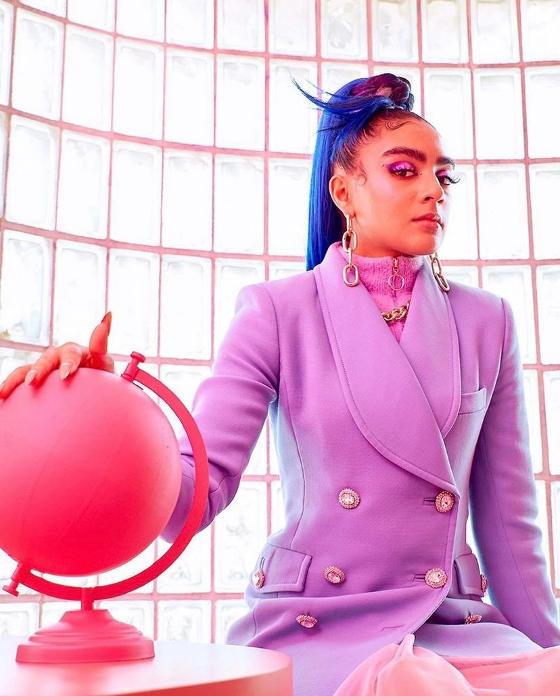

Welcome to the Sisterhood of Tech
GIRLS WHO CODE IS ON A MISSION TO CLOSE THE GENDER GAP IN TECHNOLOGY AND TO CHANGE THE IMAGE OF WHAT A PROGRAMMER LOOKS LIKE AND DOES.
Girls need your support to thrive in tech, and there are so many ways you can help.
Clubs
- Clubs program for 3-5th and 6-12th graders to explore coding in a fun & friendly environment
Summer Immersion Programs
- 2-week summer programs for rising 11-12th grade girls to learn coding & gain exposure to tech jobs
College Loops
- College programs to help our alumni succeed and build community with other women in tech
The gender gap in tech has been getting worse, but Girls Who Code is changing that. Our alumnni go on to major in Computer Science at 15x the national average.
/quote>IF WE ALL COME TOGETHER AND RECOGNIZE THAT WE CAN USE TECHNOLOGY FOR GOOD, WE CAN CHANGE THE WORLD./quote>
/quote> WORKING IN TECH ALLOWED ME TO SEE THE WORLD AND SEE THINGS IN NEW PERSPECTIVES. /quote>

Girls Who Code has over 8,500 programs worldwide, and we're growing fast! Find a Club, Summer Immersion Program, or College Loop near you or get one started.
Find your sisters